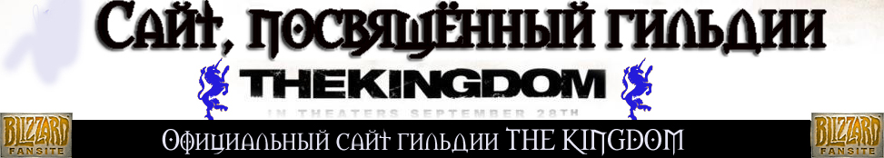
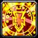

Целитель, жрец (Priest)
Целитель
- мастер исцеления, контроля
толпы монстров и управления агрессией животных. Другие классы, такие как
Шаман, Друид и Паладин, могут лечить, но не так хорошо, как Целитель. Но зато
он может, так же как и вышеперечисленные классы, воскрешать мертвых
игроков.
У Целителя есть несколько буффов, которые могут помочь членам группы, и
есть способы контроля толпы благодаря заклятью Сон. Священники также могут
контролировать некоторых человекообразных монстров на высших уровнях. Так
же, Целитель - один из самых желаемых членов команды благодаря навыку
исцеления, воскрешения и, особенно, заклятью Сон!
Доступен расам:
Человек, Дварфы, Ночные Эльфы, Тролли, Нежить
Стандартные индикаторы: Здоровье/Мана
Используемый тип одежды: тряпичные рубашки, робы
Используемое
оружие: одноручные булавы, клинки, посохи, палки
Боевой целитель (прокачка ветки SHADOW в талантах)
Исцеляющие заклятья (Святая
Магия) |
|
Малое Лечение (Lesser Heal) - слегка повышает
здоровье цели. |
 |
Лечение (Heal) - лечит вашу цель. |
|
Большое Лечение (Greater Heal) - хорошо
залечивает раны, но заклинание очень долго накладывается на
цель. |
|
Молитва Исцеления (Групповое лечение) (Prayer
of Healing (Group Heal)) - лечит ближайших членов группы. Это очень
могущественная молитва. |
|
Восстановление (Renew) - потихоньку
регенерирует здоровье выбранной цели. Это заклинание удобно
применять после битвы или в тот момент, когда на самостоятельное
лечение у вас нету времени. |
Заклятья Святой
Магии |
|
Святое Слово: Щит (Holy Word: Shield) -
мгновенно возводит вокруг цели щит, поглощающий повреждения. Пока
щит действует, заклятья не могут быть прерваны физическими атаками.
Используйте Святое Слого на слабых противниках (таких как маги).
Хорошие Жрецы - мастера в использовании Святого Слова, это их
главное оружие. |
|
Святой Удар (Holy Smite (Direct Damage)) -
наносит противнику повреждения святой магией. Эта способность хороша
против уязвимых к святому повреждению монстров, например к
мертвецам. |
|
Внутренний Огонь [применяется на себя]
(Inner Fire) - увеличивает повреждение и броню на несколько минут.
Так как это self-buff, то вы не сможете использовать его на других
персонажах. |
|
Рассеивание Магии (Dispel Magic) - рассеивает
магию на цели, уничтожает вредные заклятия у союзника или полезные
заклятия у вашего врага. Это заклятье может использоваться для
дебуффинга монстров или удаления негативных заклятий, накладываемых
монстрами на вас или на других членов команды. |
|
Нейтрализация Болезни (Nullify Disease) - Цель
приобретает иммунитет к болезням на несколько секунд и вылечивается
от всех существующих болезней. Оно помогает против надоедающих
болезней, передаваемых вам от
монстров.
|
Заклятья Темной
Магии |
|
Удар Разума (Mind Blast (Direct Damage)) -
наносит цели несколько повреждений темной магией, но служит причиной
угрозы. Угроза заключается в том, что монстры придут в ярость и
скорее всего группой пойдут на вас. Но оно является хорошим
заклятьем для добивания почти мертвых монстров или для отвлечения
противника от ваших союзников. |
|
Слово Тени: Боль (Shadow Word: Pain (Damage
over Time)) - слово тьмы, которое наносит немного повреждений каждую
секунду. Используйте это заклятье, когда битва обещает быть долгой.
Если монстр умрет быстро, то вы потратите это заклинание зря, так
как оно не успеет завершиться до смерти монстра. |
|
Ожег Маны (Mana Burn) - высасывает ману из
цели. За каждую ману, отобранную этим путем, цель получает
повреждения. Это умение полезно против вражеских колдунов обладающих
маной. |
|
Гнилой разум (Mind Rot) - высасывает ману из
цели в течение нескольких секунд. Это полезно против вражеских
колдунов, если вы будете недолго сражаться с ними, и время сражения
будет достаточно для работы Гнилого Разума. |
|
Видение Разума (MindVision) - позволяет
колдующему видеть глазами цели в течение нескольких минут. Это
умение полезно для разведывания с целью нахождения слабых мест или
для развлечения, или для удовлетворения
любопытства.
|
| Буффы |
|
Святое Слово: Стойкость (Holy Word: Fortitude)
- Святая сила сливается с целью, повышая Выносливость цели на
небольшое время. Накладывайте его на себя или на членов группы,
поскольку оно достаточно хорошо повышает параметр здоровья. Просите
согруппников информировать вас, когда эффект этого заклинания
закончился, или проверяйте сами, наводя мышку на их буффы в левой
части экрана. |
|  |
Святая Защита (Holy Protection) - повышает
сопротивляемость цели к святой магии на некоторое время. Используйте
этот буфф, если вы знаете, что сражаетесь с монстрами, использующими
святую магию. |
|
Теневая Защита (Shadow Protection) -
увеличивает сопротивляемость цели к теневой магии на несколько
минут. |
Пугающие и контролирующие
способности |
|
Сон (Sleep) - усыпляет враждебную цель на
несколько секунд. Любое враждебное действие разбудит цель. Только
одна цель может быть усыплена одновременно. Сон - одно из самых
главных заклинаний Жреца. Чаще всего следует усыплять самого
опасного монстра или какого-нибудь другого монстра, которого не
собирается атаковать команда. Приучите членов вашей группы не будить
спящих монстров с помощью атак ближнего боя или заклинаниями. |
|
Промывка Мозгов (Brainwash) - удаляет всю
угрозу от всех монстров на выбранную цель. После использования этой
способности Жреца, все монстры забывают, кто их атаковал и кто им
наносил повреждения. |
|
Спокойствие мысли (Mind Soothe) - успокаивает
цель, уменьшает область, в пределах которой он будет атаковать. Эта
способность полезна при нападении, или когда нужно пройти мимо
монстра незамеченным. |
|
Крик (Psychic Scream) - колдующий издает крик,
который заставляет несколько ближайших врагов убежать с поля боя.
Это хорошее заклинание для контроля ситуации, когда на вас напало
слишком много монстров. |
Richie production, Ltd. 2008